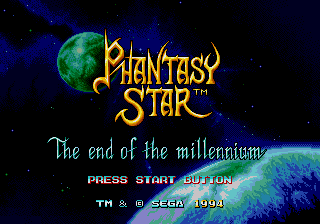

NOXIUM ELYSIUM > root:psiv/index.html
Phantasy Star IV: The End of the Millennium is the grand finale of SEGA's beloved Phantasy Star series, originally released in 1993 for the Sega Genesis. Set within the futuristic Algo Star System, the game follows Chaz Ashley, a young hunter, and his mentor, Alys Brangwin, as they investigate a sinister force threatening to engulf their world. Along the way, they're joined by a diverse cast of allies, each with their own skills and backgrounds, from the technologically advanced android Wren to the mysterious Esper, Rune Walsh.
The game features an engaging turn-based combat system, with options like macros allowing for strategic team coordination in battles. Players can explore a variety of planets—each with unique environments and challenges—while uncovering long-lost secrets of Algo's past and connections to the earlier games in the series. One of the game's standout features is its use of manga-style cutscenes to advance the plot, delivering an emotional and cinematic storytelling experience.
Phantasy Star IV is renowned for its balance between science fiction and fantasy, blending space-age technology with ancient magic and mythical creatures. For fans of classic JRPGs, the game offers a richly rewarding experience, tying together years of narrative threads into a satisfying conclusion for the series.
GAME INTRO
The long, long struggle of ancient times finally ended...
The victor sacrificed the vanquished to the heavens.
Four bells tolled. Four torches were lit.
And the world continued for thousands of years...
PHANTASY STAR: The End of the Millennium
The Algo solar system, somewhere in space...
Once a brilliant civilization flourished here. The citizens devoted themselves to art and the sciences, and life was prosperous and good.
Then a series of disasters struck. The system-wide management system, 'Mother Brain,' was destroyed. So was the first planet, Parma. Over 90% of the system's population died, and the advanced technological culture was lost.
Society declined, spiralling downward until at last only a few scattered groups even remembered there once were better times.
A thousand years passed.
At last, civilization is once more on the rise across the Algo system. People are again turning to thoughts of an easier life. Old knowledge is being rediscovered.
But just as things look brighter, beyond a threshold long thought closed, a dark and very ancient evil stirs...